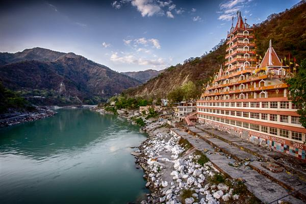

PARAVATI VALLEY is the most imortant remnant of the Hippie trail in india
Himachal Pradesh is known for its wonderful scenic beauty. Majestic snow capped mountains, lush green forests, gushing rivers and streams. ... Along with natural beauty it also homes many beautiful temples and Buddhist monasteries which is major attraction for its tourists
Many outdoor activities such as rock climbing, mountain biking, paragliding, ice-skating, trekking, rafting, and heli-skiing are popular tourist attractions in Himachal Pradesh.
Himachal Pradesh is famous for its handicrafts including carpets, paintings, leather works, stoles, and more
DHARAMSHALA
Nestled in the upper reaches of Kangra Valley, Dharamshala enjoys one of the best climates in Himachal. Surrounded by snow-laden peaks of Dhauladhar mountains and lush pine and deodar forests, the town is brimming with cultural and architectural attractions, along with a great number of restaurants, cafes and shops catering to its extensive multicultural Indian and Tibetan communities. Its suburbs, such as McLeod Ganj (India’s Mini Tibet), Dharamkot, Sindhbari, Ramnagar and Naddi are worth exploring. Also, with a plethora of trekking trails, waterfalls and scenic valleys, the town beckons adventurers from across the world.
Dharamshala, Himachal Pradesh, India
SPITI VALLEY
At an altitude of 3,810 meters, Spiti Valley is a remote village up in the cold desert mountains. Despite the fact it is fairly isolated, plenty of spiritual and adventure travellers are gradually making their way to Spiti to explore its many Buddhist monasteries scattered throughout the area, and indulge in thrilling activities, such as trekking, mountain biking, whitewater rafting and wildlife spotting. In addition, it is surrounded by several high-altitude villages, like Tabo, Kaza, Dhankar, Kibber, Komic and Langza, which can also be explored on your trip to Spiti.
UTTARAKHAND
HARIDWAR
kedarnath
Nainital
A mystical land of mountains and mythologies, exquisite landscapes and exhilarating adventure, and wellness and yoga, Uttarakhand has something to offer every traveller. Popularly known as Devbhoomi, or the land of gods, the state is framed by the Himalayas and divided into two main regions, Garhwal and Kumaon. While Uttarakhand has several well-known destinations like Nainital, Mussoorie, Corbett National Park and Auli, and pilgrimage sites like Kedarnath, Badrinath, Rishikesh and Haridwar, explore the 13 lesser-known destinations from the state's 13 districts.
RISHIKESH

For the spiritualist in you, one of the places to visit in Uttarakhand is Rishikesh. This charming town exudes a rustic touch and spiritual energy that is infectious. The ancient temples and popular cafes make Rishikesh one of the best places in Uttarakhand.
Things to do: A thrilling white water rafting in Rishikesh is an experience of a lifetime and is one of best things to do in Uttarakhand. Looking for a diving experience, take a dip in the holy Ganga and feel spiritually cleansed with the divine experience
MUSSOORIE
The Queen of Hills, Mussoorie, is a pretty hill station located at a distance of about 38 km from Dehradun, a ride from Dehradun to Musoorie is full of scenic views and beautiful landscapes which makes this place one of the best places to visit in Uttarakhand. The captivating beauty of Musoorie easily makes a spot for itself in the top 10 places to visit in Uttarakhand.
Must visit the place: Dont miss the stunning Kempty Falls near Mussoorie.
Things to do: Walk through the winding lanes of the tiny town and explore its beauty. Also, try your luck in spotting resident author Ruskin Bond, who enjoys a stroll through the markets
UTTER PRADESH
TAJ MAHAL
JAHANGIR MAHAL
VARANASHI
AGRA has ancient history and modern residences together which attracts several global tourists. The Taj Mahal is one of the top reasons to visit Agra. But this city is houses architectural monuments such as Agra Fort and a small city called Fatehpuri Sikri which are UNESCO World Heritage Sites.
Varanasi, popularly known as Kashi is popular amongst the pilgrims for taking holy dips in the River Ganges. The city has been one of the most popular tourist destinations in India due to its endless ghats, famous temples, fascinating rituals, and vibrant religious festivals
A city made of red sandstone, Fatehpur Sikri was founded in 1571 by Mughal Emperor Akbar. It’s located at a distance of 40 km. from Agra and is rightly known as the pride of the Mughal Empire. Fatehpur Sikri is essentially a fortified city and had been the capital of the Empire for fifteen years. A unique blend of Indo-Islamic architectural excellence and religious beliefs adorns Fatehpur Sikri. Today, a UNESCO world heritage site, it is home to the three palaces for each of Emperor Akbar’s favourite wives – one a Hindu (Jodha Bai), one a Muslim and one a Christian; Jama Masjid – a stunning mosque which is still in use today; Buland Darwaza; and tomb of Salim Chisti among many other famous monuments. Fatehpur Sikri looks magical and splendid, especially during the sunset. This one is certainly one of the best places to visit in Uttar Pradesh.
A city made of red sandstone, Fatehpur Sikri was founded in 1571 by Mughal Emperor Akbar. Its located at a distance of 40 km. from Agra and is rightly known as the pride of the Mughal Empire. Fatehpur Sikri is essentially a fortified city and had been the capital of the Empire for fifteen years. A unique blend of Indo-Islamic architectural excellence and religious beliefs adorns Fatehpur Sikri. Today, a UNESCO world heritage site, it is home to the three palaces for each of Emperor Akbars favourite wives one a Hindu (Jodha Bai), one a Muslim and one a Christian; Jama Masjid a stunning mosque which is still in use today; Buland Darwaza; and tomb of Salim Chisti among many other famous monuments. Fatehpur Sikri looks magical and splendid, especially during the sunset. This one is certainly one of the best places to visit in Uttar Pradesh.
JAMMU AND KASHMIR
DAL LAKE
VAISHNO DEVI
GULMARG
SONMARG
Sonmarg means a “meadow of gold”, is one of the best tourist places in Jammu and Kashmir for sightseeing & adventure. Its landscape is marked by a glacier, forests and snow capped mountains.
The three Great Lakes in Kashmir: Kishansar, Vishansar and Gadsar, can be visited from here. Camping & trout fishing are some adventure activities that are popular. Sonmarg is also the starting point for the trek to Amarnath Cave, a major Hindu pilgrimage destination.
PAHALGAM
Any tourist visiting the top 10 places in Jammu and Kashmir will always visit Pahalgam. Located in the Anantnag district, it is located on the banks of the River Lidder.
It is a visual treat with its meadows, forests and pristine environment. Aru Valley, Betab Valley and Baisaran are some of the places which make Pahalgam the best in Kashmir for a sightseeing tour.